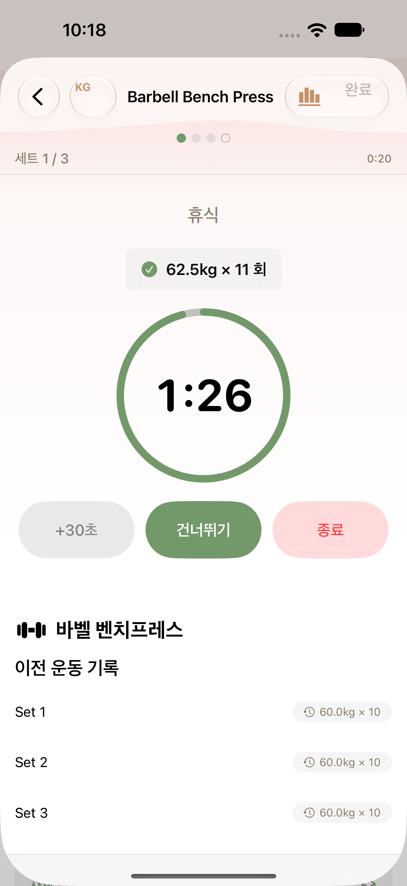
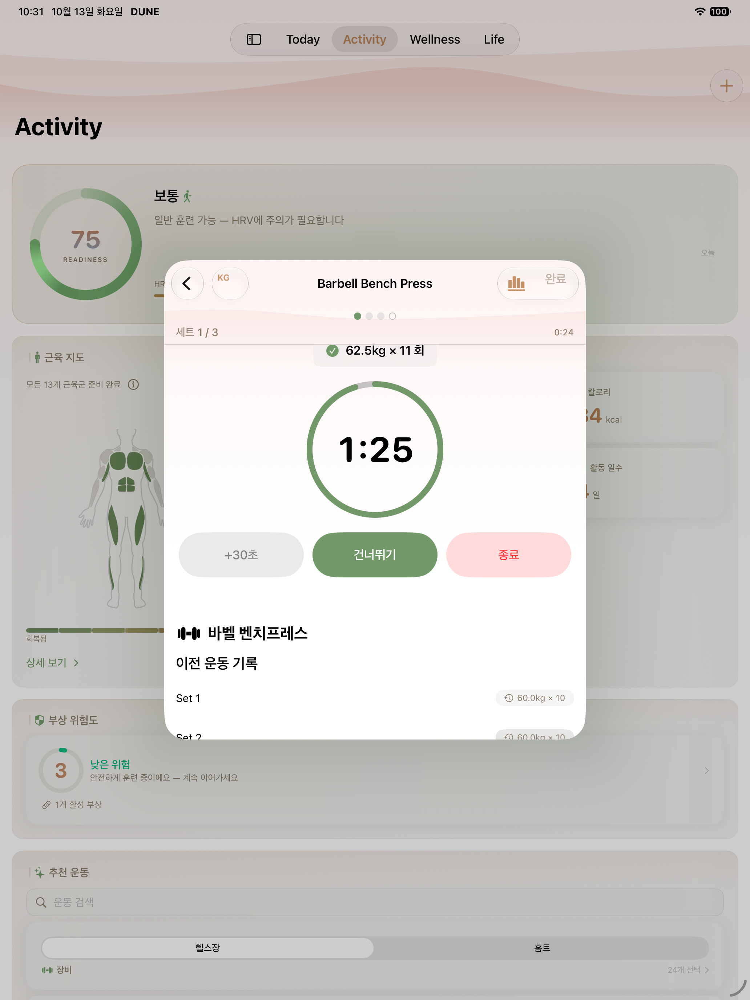
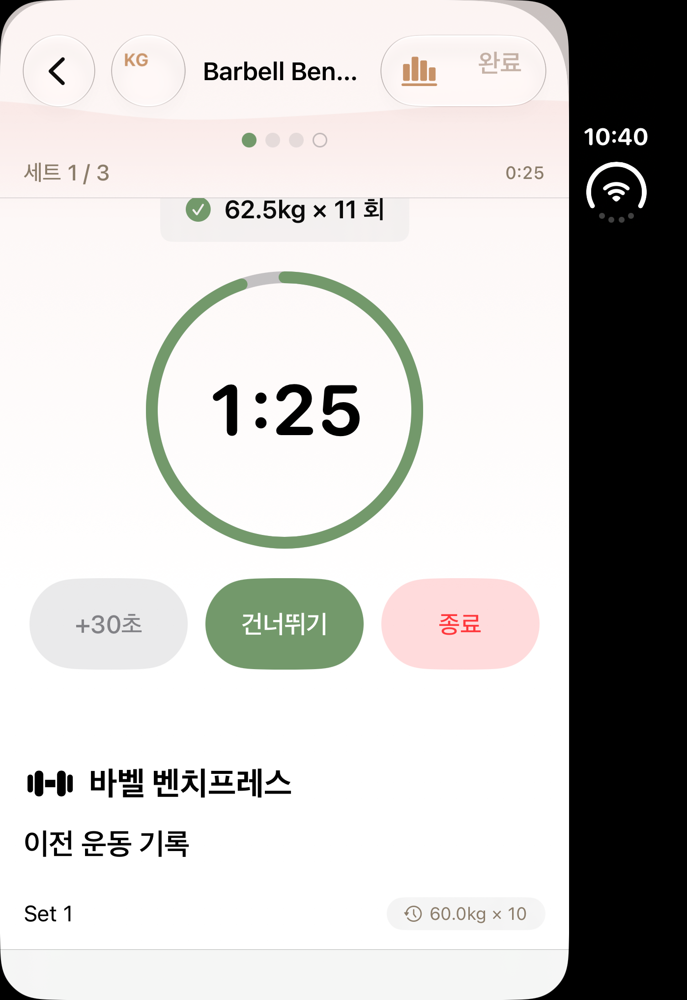
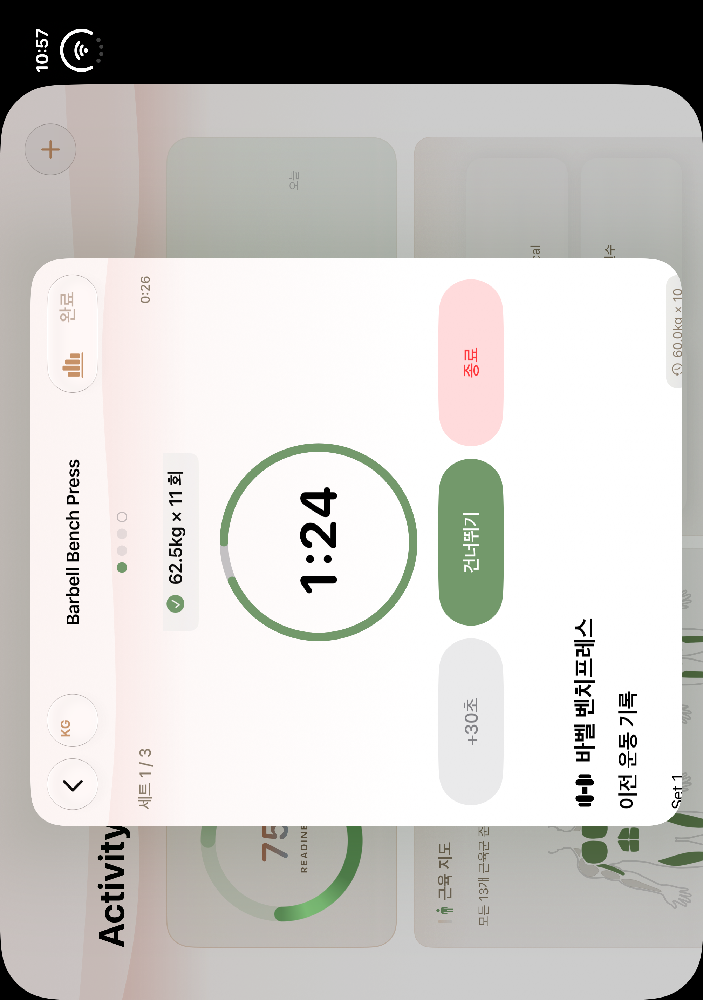
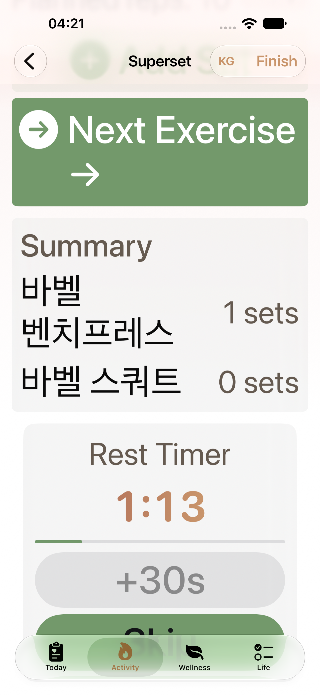
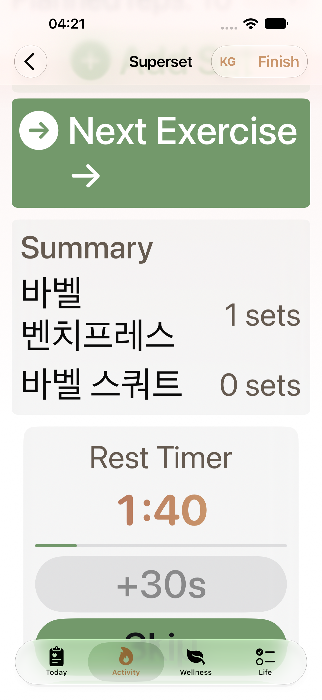
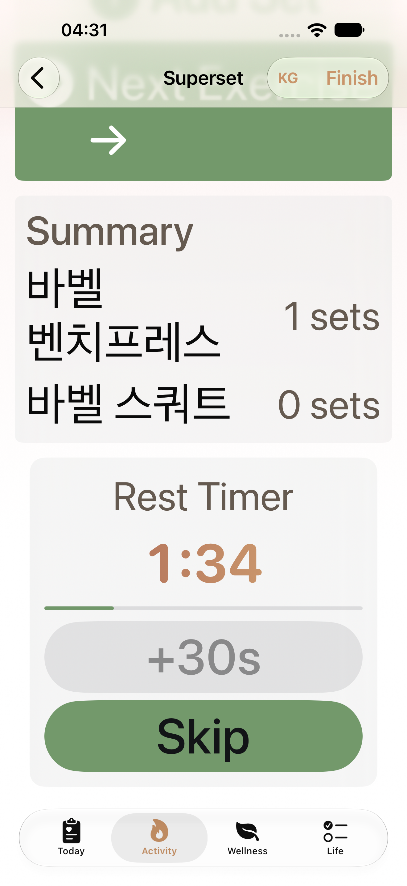
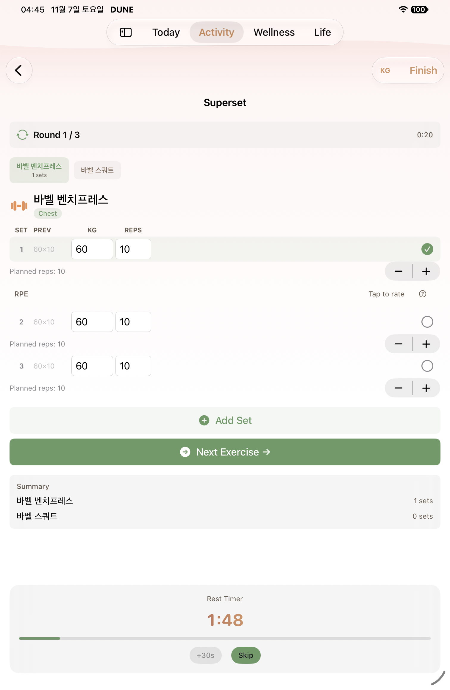
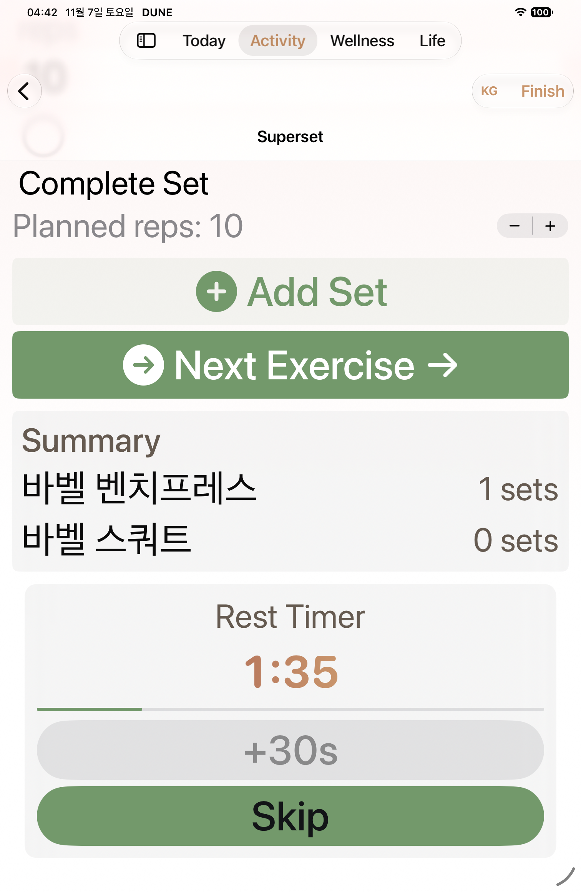

W07 · B11 native gallery
Native PNG/AX pairs are classified by completed selector receipts. Historical captures and failure diagnostics are separate. See manifest for source revisions and limits.
Pending or limited- phone W07 normal rest timer before adding time: named PNG/AX pair absent
- phone W07 normal rest timer after adding time: named PNG/AX pair absent
- phone-retry1 W07 normal rest timer before adding time: named PNG/AX pair absent
- phone-retry1 W07 normal rest timer after adding time: named PNG/AX pair absent
- Duo closed/open current-source capture pending; historical baselines only
- Before-teardown failure attachments never count as passed W07/W08/W09 evidence

regular · historical
W07 historical baseline

ipad · historical
W07 historical baseline

duo · historical
W07 historical baseline

duo-open · historical
W07 historical baseline

regular · diagnostic
MAX rest timer and actions
AX tree
regular · diagnostic
MAX rest timer after +30s
AX treeregular · after
MAX rest timer and actions
AX tree
regular · after
MAX rest timer after +30s
AX tree ipad · after
ipad · after
Normal rest timer and actions
AX tree
ipad · after
Normal rest timer after +30s
AX treeipad · after
MAX rest timer and actions
AX tree
ipad · after
MAX rest timer after +30s
AX tree